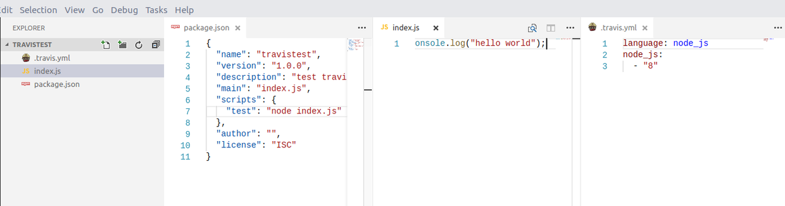
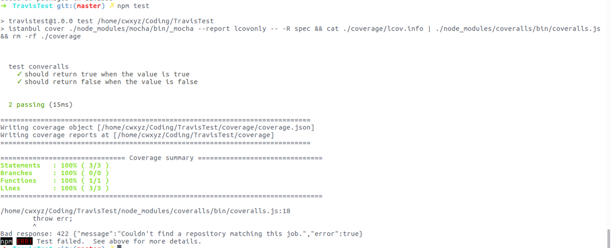

JavaScript 持续集成
这篇文章的目标就是在 GitHub 上显示如下图标。当然不是简单的显示两张图片，而是显示当前项目的一些状态。
持续集成官网： Travis-ci
测试覆盖率官网：COVERALLS
持续集成
如果项目中没有测试，那么就不需要包含测试覆盖率这一块。
首先创建一个简单的项目
那么第一步，当然是选择跟着官方文档走啦，先创建 .travis.yml 文件，查看 node 版本 node -v。然后填进去，我的是 8.5.0，所以我的文件是这样的：
1 | |
然后 git push 到 GitHub ，然后刷新 Travis CI 的页面：
就这样，持续集成就 OK 了，是不是很简单，然后点击 passing 图标，选择 Markdown 写到 readme 里面就可以在 GitHub 上看到了。
测试覆盖率
同样的，跟着官方文档上的第一个 node-coveralls 走。项目还是上面那个测试项目。
测试项目的目录：

在 node-coveralls 里面有很多钟方式，我选择 Istanbul + mocha。
那么，第一步，当然是安装 Istanbul + mocha 啦，当然还要安装 coveralls
1 | |
为了不把 node_module 上传到 GitHub ，所以还需要创建 `.gitignore’ ，在里面添加 node_module 文件夹。
然后写测试，测试为：
修改 package.json 里面的 test 脚本为
1 | |
然后运行 npm test 命令，会提示一个错误，那个是因为没有在 `package.json’ 里面添加 repository 地址，可以忽略。

到这一步，就可以把项目 push 到 GitHub 上去了。然后刷新在 COVERALLS 上的项目的网页。
就可以看到成功了！然后点击 EMBED 图标，选择 Markdown 复制到 readme 里面，就可以显示在 GitHub 上了。
关于 Travis CI 和 COVERALLS 的具体的配置。请参考相应的官网的说明。
项目地址
本篇文章的项目的 GitHub 地址 ：Travis Test
到这里还不赶紧去 GitHub 上配置一波～。
如果本篇文章对你有帮助，为什么不点一波喜欢在走呢～